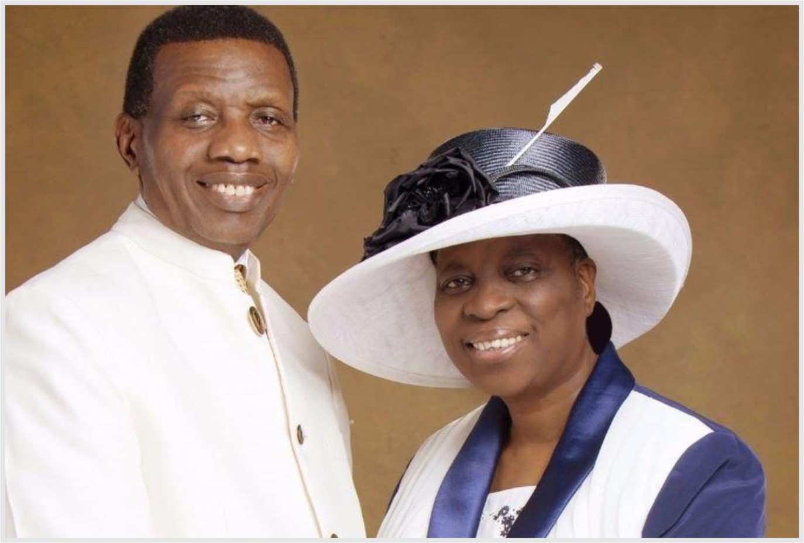

Enoch Adejare Adeboye is a Nigerian pastor and General Overseer of
Redeemed Christian Church of God. The life of Enoch Adejare Adeboye is a
fulfillment of the scriptures in Zechariah 4:10 which declare, “despise
not the days of small beginnings”.
Early Life
Enoch Adejare Adeboye was born on 2 March 1942 in Ifewara, near Ife, in
the then Southern Region, British Nigeria. He was born into a very
humble family.
Education
Enoch Adejare Adeboye began his education at Ilesha Grammar School,
Ilesha, Osun State in 1956. Enoch Adejare Adeboye then proceeded to the
University of Nigeria Nsukka (UNN) in Nsukka, but because of the Nigeria
Civil War, he completed his first degree in the University of Ife (now
Obafemi Awolowo University), graduating with a Bachelor's degree in
Mathematics in 1967. In 1969, he obtained a Master's degree in
Hydrodynamics from University of Lagos. In 1975, he obtained a Ph.D. in
Applied Mathematics from the University of Lagos.
Family
Pastor Enoch Adeboye is happily married to Pastor(Mrs) Folu Adeboye.
They are blessed with four children, many grandchildren and millions of
spiritual children all over the world.

Pastor E.A. Adeboye and his wonderful wife.
Ministry
Adejare Adeboye joined the Redemed Christian Church of God in 1973 and
served as an interpreter before he was ordained a pastor in the church
by Pa. Josiah Akindayomi in 1975. He became General Overseer of the
church in 1981. For three years, he filled the role part-time at
Unilorin before giving up his university position to preach full-time.
The church which was not well known before Adeboye became the General
Overseer, has branches in about 198 nations as of (March 2017),
including more than 14,000,000 worshipers in Nigeria. Adeboye has stated
that he aims to put a church within five minutes walking distance in
developing cities and five minutes driving distance in developed cities.
Adeboye is considered a preacher of the prosperity gospel, a claim he
does not deny, saying that "Pentecostals have such an impact because
they talk of the here and now, not just the by and by while we have to
worry about heaven, there are some things God could do for us in the
here and now". He celebrated his 80th birthday in 2022, Adeboye's
foundation donated eight dialysis machines to Wuse District Hospital,
together with a reverse osmosis medical water purification system and an
electrical generator.
Publications
Adeboye has written many books including -
Open Heavens Daily Devotional
Lessons from the Sower Deadly Enemy of Man Divine Favour Kingdom
Prosperity Fruits of the Spirit God of Wonders God’s
Remembrance and Deliverance
Prevailing Prayers
Mathematics & Greatness
Favourite Quote
"If you make it a habit to find and eat the
Word of God daily, joy will never cease from your heart
again."